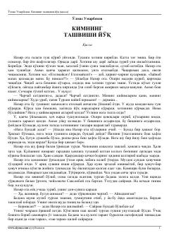

OUKeksa Nazir otaning xotiralar va hayot tashvishlari haqidagi qissasi.
Bu qissa Nazir ota ismli keksa kishining hayotini tasvirlaydi. U vafot etgan xotinini tushida ko'rib, uning xonasini tartibga solishga qaror qiladi. Asar oilaviy munosabatlar, yo'qotish va xotira mavzularini chuqur his-tuyg'u bilan yoritadi.